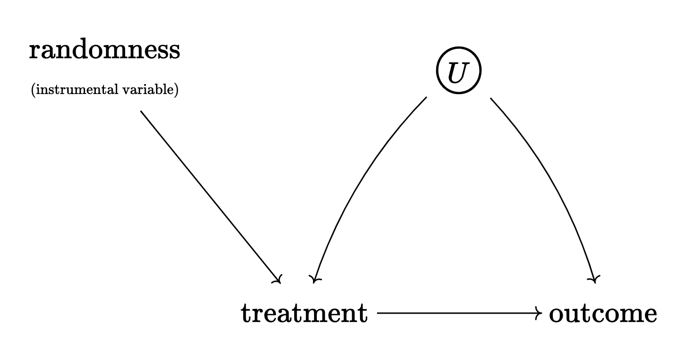

Causality
Here are the major types of research designs associated with causal inference:
Randomized experiments
Adjusting for confounding
Difference-in-Differences
Regression discontinuity
Instrumental variables (IV)
Not all people agree about the definition of causality.
One group of people emphasizes intervention or treatment.
NO CAUSATION WITHOUT MANIPULATION
Holland (1986, 959)
These people adopt the so-called potential outcomes framework. Here, the word cause is reserved for things that can be treatments in an experiment, at least in principle. This includes “natural” and “hypothetical” experiments.
Thus, it’s important to distinguish between causes and attributes.
For example:
“She did well on the exam because she is a woman [attribute].”
An attribute cannot be a cause in an experiment; thus, the only way for an attribute to change its value is for the same unit to undergo transformative change.
However, attributes might be central in understanding heterogeneous treatment effects.
“She did well on the exam because she was coached by her teacher [treatment].”
This is OK.
Others disagree.
This view leads to other counterintuitive ideas about causation: the moon does not cause the tides, tornadoes and hurricanes do not cause the destruction of property, and so on.
Bollen (1989, 41)
Thus, they believe that manipulation is neither a necessary nor sufficient condition for causality. Bollen (1989, 41) argues that we only need to think about isolation, association, and direction of influence. Judea Pearl has a similar but more elaborate framework which boils down to the notion that causality involves variables that “listen” (or respond) to other variables.
Notation
The difference between seeing and doing is monumental. It explains why we do not regard movements in a thermostat to be a cause of the temperature outside.
\[ \Pr(Y \mid T) \neq \Pr(Y \mid do(T)) \]
Potential Outcomes
\(T\) is a binary treatment variable. The terms “treatment” and “cause” are used interchangeably.
\(Y\) is the outcome we observe.
\(Y^0\) is the the value the outcome would take if \(T=0\).
\(Y^1\) is the value the outcome would take if \(T=1\).
\(Y^0\) and \(Y^1\) are the potential outcomes.
We see \(Y^0\) or \(Y^1\) for the same unit, but never both. This is the fundamental problem of causal inference.
When \(T=1\), \(Y^0\) is the counterfactual.
When \(T=0\), \(Y^1\) is the counterfactual.
One might object to the fundamental problem of causal inference by noting situations where we can actually measure both \(Y^0\) and \(Y^1\) on the same unit \(i\). For example, we could drink warm milk one evening and coffee another evening, and then measure our amount of sleep time. Holland (1986) refers to this as temporal stability and causal transience. This is the same situation in which we flick the same light switch on and off to figure out if it turns on the light to a room. In other settings, it is perfectly reasonable to assume that \(Y^1_i = Y^1_j\) and that \(Y^0_i = Y^0_j\) (unit homogeneity assumption). For example, this is very common in laboratories that take special care in standardizing the units of an experiment (e.g., mice).
Experiments
Experiments work because they make the distribution of potential outcomes the same across levels of the treatment variable. In other words, the potential outcomes and the treatment indicator are independent.
\[ Y^0, Y^1 \perp T \]
Thus, in expectation:
\[ E[Y^0 \mid T = 0] = E[Y^0 \mid T = 1] \\ E[Y^1 \mid T = 0] = E[Y^1 \mid T = 1] \tag{1}\]
Which means that we can easily estimate the average causal effect of \(T\) over all units in a population:
\[ \text{ATE} = \underbrace{E[Y^1 - Y^0] = E[Y^1] - E[Y^0]}_\text{linearity of expectations} \tag{2}\]
In the absence of randomization, so that treatment and control groups differ on pre-treatment characteristics, we might observe the following biases:
Baseline bias. The two groups might be different from each other whether they get treated or not.
Treatment effect heterogeneity. The two groups might respond differently to the treatment.
This is important because researchers sometimes assume a constant effect for every unit in the population. This is implied in the unit homogeneity assumption. But if the variability of causal effects is large across the population, then the ATE might not represent the causal effect of a specific unit very well; the ATE might be irrelevant, no matter how carefully we estimate it.
Three types of treatment effects:
\(\text{ATE}\), for all units (effect of switching)
\(\text{ATT}\), for treated units (effect of taking away treatment)
\(\text{ATC}\) or \(\text{ATU}\), for untreated units (effect of adding treatment)
Example:
| Group (\(T\)) | \(E[Y^1]\) | \(E[Y^0]\) |
|---|---|---|
| College Degree (\(T = 1\)) | 1000 | 600* |
| No Degree (\(T = 0\)) | 800* | 500 |
If 30% of the population has a degree…
What is the naive estimate?
500
What is the ATT?
400
What is the ATC?
300
What is the ATE?
\(0.3\times 400 + 0.7 \times 300 = 330\)
More than two treatment levels, continuous treatments, and multiple treatment factors
GELMAN
Identification and Causal Diagrams
Identification refers to the idea of identifying the effect of a treatment (or cause) on an outcome.
Identification is the process of figuring out what part of the variation in your data answers your research question. It’s called identification because we’ve ensured that our calculation identifies a single theoretical mechanism of interest. In other words, we’ve gotten past all the misleading clues and identified our culprit.
Huntington-Klein (2021, 77)
Causal diagrams or DAGs are graphical representations of a data generating process. Everything we draw is hopefully an informed assumption; everything that’s not in the diagram is also an assumption. In other words, DAGs encode identifying assumptions.
Paths.
Direct effects.
Indirect effects.
Total effects.
Front door paths. They point away from the treatment. If we want to estimate “total effects,” then we want to keep all of them open.
Back door paths. They point towards the treatment; we want to close them off.
Confounding. A property of paths, not of variables.
Colliders. A variable is a collider in a path iff both arrows point at it.
\[ a \to b \to c_\text{ollider} \leftarrow d \leftarrow e \to f \]
Here, \(b\) and \(c\) are unrelated unless we remove variation in \(c\).
In other words, we close paths by removing variation from one variable along the path (i.e., adjusting); but if the variable is a collider, then removing variation will actually open a path that was already closed.
An often unacknowledged way of adjusting for colliders is during the sample selection phase. If we have a sample of college students, it means we are adjusting for college attendance.
Open Path. A path in which there is variation in all variables along the path (and no variation in colliders).
Closed Path. A path in which there is at least one variable with no variation (or a collider with variation).
The idea of a directed acyclical graph (DAG) implies that there are no cycles. If a variable causes itself, it’s near impossible to isolate or identifying the cause of anything. The world is full with feedback loops of all sorts, but we deal with them through the incorporation of time or by isolating one effect through some kind of experimental scenario.
Note that DAGs are agnostic about functional form. This includes interactions among variables! Some people deal with interactions by drawing arrows toward arrows or by representing interactions explicitly as separate nodes.
The nicest thing about DAGs is that they help us spell out the testable implications of our assumptions. For example, if our causal diagram implies that a relationship between variables is zero, we can check for that (this is called a placebo test).
Causal diagrams also help us understand the idea the idea identification doesn’t necessarily require us to take care of all back door paths; sometimes we can use randomization. Sometimes this is achieved in experimental settings, but sometimes we can form some form of randomization in real-world settings (i.e., natural experiments). Experiments and instrumental variables are depicted equivalently in DAGs (see Figure 1).
